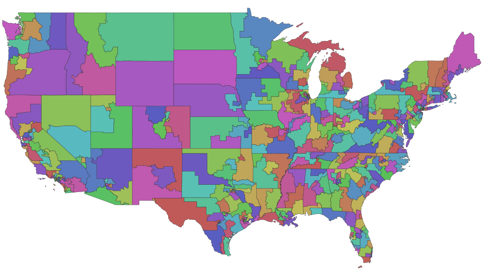

One GeoJSON file per district, for testing shape collections in Viz Maps:
districts/TX07.geojson, and so on. index.json lists
all 436 (435 districts and DC) with their bbox.
Data: U.S. Congress GIS Database (Basic, v2.3) by simplemaps.com, licensed under CC BY 4.0. Converted from the shapefile to GeoJSON (one file per district, coordinates rounded to 5 decimals); the shapes are otherwise unchanged.
Low resolution and for testing only. Not an official source of district boundaries.
